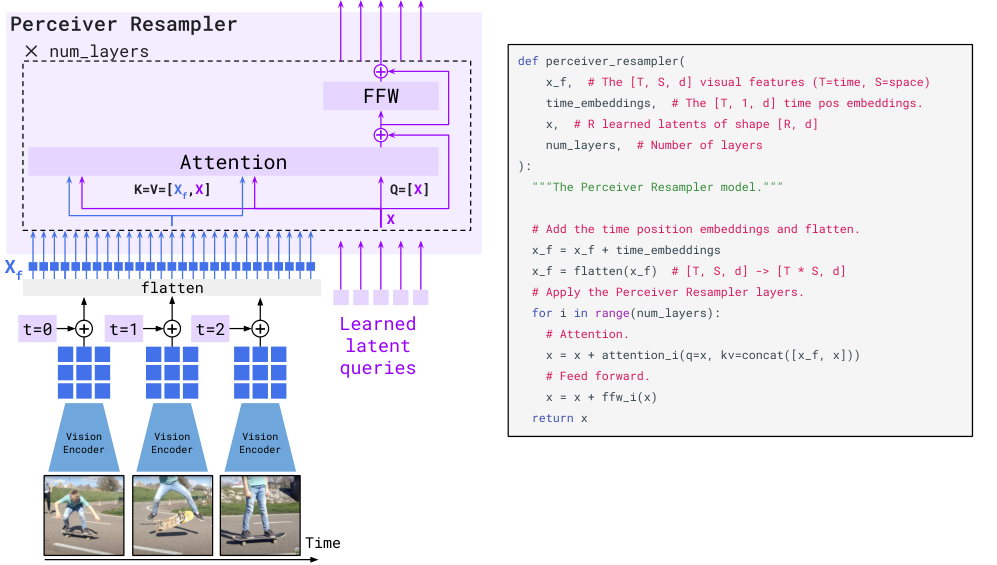
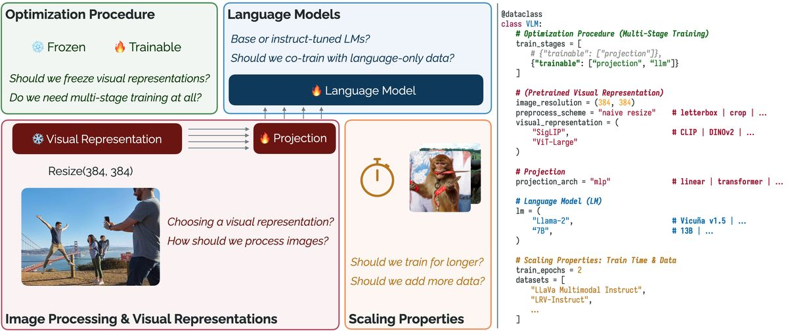

第 13 章 模态融合机制深度解析
💡 本章导读
视觉特征经过编码器（第 14 章）与连接器（第 15 章）后，最终都要"进入"语言模型的计算流——这一步就是融合（fusion）。它决定了模型是"看着图说话"还是"假装看过图说话"：融合设计不当，模型会退化为用语言先验回答问题（幻觉的主要来源之一）。本章系统梳理五大融合家族：交叉注意力（Flamingo 系）、特征调制（FiLM 系）、token 注入（LLaVA 系，当代主流）、双流协同（ViLBERT 系）与原生混合（第 19 章预告），给出每种的数学、实现代码与失败模式，并用当代消融研究回答那个关键问题：融合发生的位置真的重要吗？
先把本章的结论放在前面，供带着问题阅读：①当代开源社区已收敛到"token 注入"作为默认融合方案，交叉注意力只在"冻结 LLM"与"端侧压缩"两个特定场景保持优势；②融合机制的内部设计（门控、掩码、位置编码）比"选哪种融合"更影响最终质量；③融合问题的重心已经从"结构设计"转移到"token 经济学"——多少视觉 token、在哪些层被真正使用，这把融合与第 31 章（token 压缩）、第 39 章（推理优化）连成了一条线。
1.融合的分类学：何时、何地、怎么合
融合机制可以沿三个轴分类。轴一：融合时机——早期融合（输入端拼接，原生多模态）、中期融合（在中间层交互）、晚期融合（各自出结果再合并决策，如集成）。轴二：融合的表示粒度——特征级（连续向量交互）、注意力级（query-key 交互）、token 级（离散 token 混入序列）、决策级（logits/输出合并）。轴三：信息流向——单向（文本读视觉）、双向（互相读）、分离（各算各的最后合并）。
| 融合机制 | 代表模型 | 信息流向 | 优点 | 缺点 |
|---|---|---|---|---|
| 双流共注意力 | ViLBERT、LXMERT | 双向 | 模态独立性强、可分别预训练 | 结构复杂、参数多、已被淘汰 |
| 单流拼接 | UNITER、VisualBERT | 双向 | 简单、交互充分 | 双向注意力不适合生成 |
| 门控交叉注意力 | Flamingo、IDEFICS | 文本→视觉单向 | 冻结 LLM 也能融合、few-shot 强 | 需要专用层、推理成本高 |
| 特征调制（FiLM） | BLIP-2 内部、VQA 时代模型 | 调制式 | 轻量、即插即用 | 表达力有限 |
| Token 注入（前缀） | LLaVA、Qwen-VL、InternVL | 视觉作为 KV 前缀 | 零结构改动、直接复用 LLM | token 预算压力、注意力稀释 |
| 视觉专家插入 | CogVLM | 并行专用参数 | 不干扰文本能力 | 参数翻倍 |
| 原生早期融合 | Chameleon、Fuyu | 统一序列 | 最深的交互、统一目标 | 训练难度大、tokenizer 依赖 |
💡 技巧：读模型架构图时的"融合三问"
拿到任何一张新 VLM 的架构图，用三个问题锁定它的融合设计：①视觉特征以什么身份存在？（K/V 向量 = 交叉注意力系；KV 前缀 token = 注入系；调制参数 = FiLM 系）②有哪些新参数、哪些冻结？（雪花图标与实线的分布决定了训练什么）③多图/多轮时信息如何隔离？（找掩码图示与特殊 token：<image>、<EOC>、图序标记）。三问之后，这个模型的融合设计基本就"解剖"完了——剩下的差异多半在连接器与数据，而不是融合本身。
2.Cross-Attention 深度剖析：Flamingo 式融合
交叉注意力是多模态融合最优雅的数学形式：把第 3 章的标准自注意力"对自己算"改成"跨模态算"——查询来自一个模态，键值来自另一个模态。在 Flamingo（arXiv:2204.14198）的设计中：文本 token 是查询 Q，视觉特征（经 Perceiver Resampler 压缩成固定 64 个 token）是键值 K/V：
其中 $\mathbf{H}_t\in\mathbb{R}^{L\times d}$ 是文本隐状态、$\mathbf{Z}_v\in\mathbb{R}^{64\times d}$ 是重采样后的视觉 token。与自注意力的关键差异有三：①序列长度不受视觉影响——输出仍是 $L$ 个文本位置，视觉 token 不占上下文预算；②文本"主动查询"——每个文本位置决定自己需要哪部分视觉信息，隐式实现了"按需对齐"；③需要插入专用层——每 $n$ 层 LLM 中插入一个 XATTN-DENSE 块（Flamingo 用 $n{=}1$，即每层都有），带来额外参数与计算。Flamingo 冻结全部 LLM 权重、只训 Resampler 与交叉注意力层，用 8 万亿 token 的多模态混合数据训出 80B 模型，在 16 项任务上 few-shot 超过微调 SOTA——证明了"冻结大模型 + 学习融合"路线的可行性。

交叉注意力的代价：①每层都要对视觉 K/V 重复计算注意力（视觉 token 越多成本越高）；②插入新层破坏了与现成 LLM 权重的兼容性——必须从预训练起点训练融合层，无法"插即用"一个已经对齐好的 LLM；③在多图场景，交叉注意力需要额外的机制区分"当前文本属于哪张图"（Flamingo 用 <image> 标记 + 关联注意力掩码）。这三点正是 2023 年社区转向 token 注入的推力。
值得细看的是 Flamingo 处理图文交错序列的机制，它是 few-shot 能力的来源：训练样本形如 <image>[视觉64token]一个穿红裙的女孩…</answer><EOC><image>[视觉64token]…</answer>——多对图文按时间顺序交错，<EOC>（end of chunk）标记把序列切成若干"图文块"。关联掩码保证：每个文本块对之前所有图做交叉注意力（few-shot 的示例图依然可见），但训练时 loss 只算"每个块内 <image> 之后的文本"，其它文本位置（包括示例的答案）被 mask 掉。这套设计让"上下文中的示例图 + 示例问答"天然构成 few-shot 提示——语言建模的 ICL 范式（第 6 章）在视觉维度上的完整移植。IDEFICS（HuggingFace 复现版）与 OpenFlamingo 沿用此设计，也把它列为"必须调对否则 few-shot 全废"的头号细节。
📄 论文精读：Flamingo（Alayrac et al., NeurIPS 2022, arXiv:2204.14198）
问题：如何让一个大型预训练 LLM 获得视觉能力，而不破坏其语言能力，并支持任意图文交错的 few-shot 输入？方法：Chinchilla 70B 冻结；Perceiver Resampler 把任意分辨率/帧数的视觉特征压成 64 个 token；GATED XATTN-DENSE 逐层注入（每层一个门控交叉注意力块，零初始化 tanh 门控）；训练数据是图文交错序列（M3W + 图文对 + 视频），配 <image>/<EOC> 特殊 token 与"图像关联掩码"。关键结果：16 项多模态任务 few-shot 超过当时微调 SOTA；32-shot 交错示例下性能随示例数稳定提升——跨模态 ICL 的首次系统演示。为什么重要：确立了"冻结 LLM + 轻量融合"路线与图文交错训练范式；其门控设计成为后续安全注入新能力的模板（IDEFICS、OpenFlamingo 复现线）。局限：专用融合层与每层交叉注意力的成本，以及非开源权重，直接催生了 2023 年"token 注入 + 开源 LLM"的替代路线（LLaVA 等）。延伸阅读：OpenFlamingo（arXiv:2311.01346）开源复现的消融，量化了门控与交错掩码各贡献多少。
3.门控机制：让融合"从零开始"学会恰到好处
Flamingo 交叉注意力有一个看似随意实则精妙的设计——tanh 门控：
$\alpha$ 是每个通道（或每层一个标量）的可学习参数，初始化为 0。训练开始时 $\tanh(0)=0$，融合分支的输出完全被关闭——模型等于纯文本 LLM。随着训练进行，$\alpha$ 缓慢偏离 0，视觉信息"逐渐淡入"。为什么这很重要？三个理由：①稳定性——随机初始化的融合分支在训练初期会向 LLM 注入大噪声，破坏文本预训练权重（LLM 是冻结的，噪声无法被"适应"）；零初始化让梯度流从干净状态启动。②可学习的重要性——$\alpha$ 的最终值天然反映每个融合层的重要性（类似 ReZero/ SkipInit 的思想），也便于诊断（哪层的门开了大，哪层在认真看图）。③它与"冻结 LLM"是配套设计：冻结的权重无法吸收初始化噪声，所以噪声必须从源头关掉。
📐 理论推导：零初始化门控的梯度动力学
设残差流 $\mathbf{h}' = \mathbf{h} + \tanh(\alpha) f(\mathbf{h})$，损失为 $\mathcal{L}$。对 $\alpha$ 的梯度：
初始时刻：融合分支输出 $f(\mathbf{h})$ 不影响网络输出（被 $\tanh(0)=0$ 关闭），但 $\alpha$ 的梯度不为零——它等于"损失对残差流的梯度"与"融合分支输出"的内积：若视觉信息对降低损失有用（两者正相关），$\alpha$ 增大；若无用，$\alpha$ 基本不动。也就是说，门控自动做了一次"视觉信息有用性"的在线评估，有用的通道逐步打开，无用的保持关闭——这就是为什么训练后不同层的 $\alpha$ 值差异巨大且可解释。同样的思想出现在 ReZero（arXiv:1903.00755）、Depth-Scaled 初始化与 LoRA 的零初始化 B 矩阵（第 36 章）中："新增路径从零开始"是向预训练网络安全插入新能力的一般原则。
4.特征级调制：FiLM 与它的变体
交叉注意力是"查询式"融合，还有一类更轻量的调制式（modulation）融合：用一个模态的信息去"调节"另一个模态的特征分布。代表是 FiLM（Feature-wise Linear Modulation，arXiv:1709.07871）：
条件信息 $\mathbf{c}$（如问题文本的编码）经一个小网络生成逐通道的缩放 $\boldsymbol{\gamma}$ 与偏移 $\boldsymbol{\beta}$，对视觉特征 $\mathbf{h}$ 做仿射调制。2017–2020 年的 VQA 模型（FiLM、BLOCK、BAN 系列）大量使用这套机制："这个问题问的是颜色"→γ 向量放大颜色通道的响应。调制的优点是极轻量（不改变序列长度与计算图结构），缺点是交互粒度粗——逐通道的标量无法表达"文本第 3 个词关注图像左上角"这种细粒度对应，这正是注意力机制最终胜出的原因。但调制思想并未消失：Stable Diffusion 的时间步与文本条件注入（AdaLN、AdaLN-Zero，第 25、29 章）、ControlNet 的条件注入（第 26 章）本质上都是 FiLM 的后代；Diffusion Transformer 把"用条件调制 LayerNorm 参数"做成了标准件，是当代生成模型的事实标准。
💡 技巧：三类融合的表达力-成本谱系
按"交互细粒度"排序：调制（逐通道标量）< 交叉注意力（位置级软对齐）< token 混合序列（完整两两交互）；按"额外计算成本"排序大致相反。选择原则：任务需要"哪个位置对应哪个位置"时用注意力/token 融合；只需要"全局风格/条件"时用调制。这就是为什么 VQA 细粒度对齐需要注意力，而文生图的整体风格条件用 AdaLN 就够。
🕰 历史一刻：2016–2018，双线性池化的"融合军备竞赛"
在注意力统一融合之前，VQA 社区用"双线性池化"卷过三年竞赛：MCB（arXiv:1606.01847）用频域压缩实现外积池化，MFB（arXiv:1704.05092）低秩分解，MLB（arXiv:1710.03492）用 Hadamard 积近似——每年 VQA 榜首的涨幅几乎全部来自"怎么把视觉特征和文本特征做外积更便宜"。这段历史的价值在于它留下的两个遗产：其一，"外积交互"被证明表达力强但不可扩展（参数与维度平方相关），为注意力接管融合铺好了叙事；其二， Hadamard 积调制（MLB 的核心）演化成了后来的 FiLM 变体与特征级门控。读 2016–2018 年的 VQA 论文，你会看到当代融合设计的所有原语第一次被发明出来的样子。
5.Token 级融合：视觉 token 进序列
当代主流方案出奇地简单：把视觉 token 当作普通 token 拼进序列前面。LLaVA 的做法：连接器把视觉特征映射到 $d_{\mathrm{LLM}}$ 维，得到 576 个"视觉词"，序列变成 [v1][v2]...[v576][<sys>...系统提示...][用户问题文本]，整体送入因果 LLM——没有任何新结构，融合完全交给 LLM 自己的因果自注意力：文本位置的注意力会"回头"看到视觉 token，视觉 token 之间互相看，一切与普通文本无异。
三个训练/推理层面的细节决定了这个方案的实际效果。细节一：loss masking——视觉 token 与用户问题都不参与损失（标签置 −100），只有回答部分算 loss；漏掉这一点的最常见症状是模型学会"模仿问题"或对视觉 token 做无意义的重建。细节二：前缀 vs 交错——把所有图放前缀（简单）还是按对话顺序插入文本流（"看图1回答…再看图2…"）？多图任务上交错结构 + 图序标记显著更好，因为"当前问题对应哪张图"的信息直接编码在位置邻近性里。细节三：注意力后缀——生成时新 token 逐个追加，视觉 KV 始终保留；这就意味着 KV cache 中视觉部分占比巨大（512 token 回答 + 576 视觉前缀 = 视觉占 53%），是第 39 章"视觉 KV 压缩/丢弃"研究的直接动机。
这个"无为而治"的方案为什么能赢？①零结构成本——任意现成 LLM 直接可用，继承了其全部预训练能力与推理生态（KV cache、量化、投机解码全部无障碍）；②完整的双向视觉交互——视觉 token 在前缀里互相可见（它们之间的注意力不被因果掩码隔离），形成"图像的内部商议"；③训练简单——与普通 SFT 唯一的区别是数据里有视觉前缀。代价同样明确：①token 预算——每图数百 token，多图/高分辨率下上下文爆炸（第 22、31 章的压缩研究因此而生）；②注意力稀释——大量视觉 token 分散了文本对关键区域的注意力（FastV 等剪枝研究的出发点）；③prefill 成本——视觉 token 拉长 prefill（第 39 章）。
📐 理论推导：token 注入下的注意力掩码设计
设序列由 $N_v$ 个视觉 token、$N_s$ 个系统提示 token、$N_q$ 个问题 token 组成。标准因果掩码 $M\in\{0,-\infty\}^{L\times L}$ 满足：位置 $i$ 可见所有 $j\le i$。这个默认设计隐含了三个重要性质：①视觉 token 前缀彼此全可见——视觉 token 集中在序列最前，任意两个视觉 token $v_i, v_j$（$i,j\le N_v$）互相可见，图像内部信息充分交互；②文本对视觉全可见——所有文本位置都能"回看"全部视觉 token；③文本之间保持因果——生成行为不变。
变体设计：①视觉前缀内部双向 + 跨模态因果，等价于上述默认（因为前缀天然满足）；②"图像标记隔离"掩码——多图时防止文本 attends 到无关图（Flamingo 的 image 关联掩码思想），用于"第 2 图的问题不看第 1 图"；③打包隔离（第 8 章 varlen）——多样本拼接时用块对角掩码防止样本间串扰。写多模态数据加载器时的自检问题："我的视觉 token 在位置掩码下能看到什么？应该看到什么？"——这两个答案对上了，掩码就是对的。
6.融合位置与注意力掩码的设计空间
"在哪一层融合"曾是 VLP 时代的热门研究题（ViLBERT 在中层插入共注意力、LXMERT 全层融合、McQueen 等 2020 年的层位消融），结论大致是"深浅都融、逐层注入"优于"只在顶层/底层融合"——低层注入利于低级对应（颜色、纹理），高层注入利于语义对齐。但在 token 注入范式下，这个问题的形态变了：视觉 token 在输入层一次性进入，之后的逐层交互由 LLM 自主完成——融合位置的选择权交还给了注意力机制本身。当代的"位置"问题变成了：①连接器输出的视觉 token 注入在哪个序列位置（前缀 vs 交错在文本中间，如多图对话"图1...图2..."的顺序结构）；②视觉 token 是否参与完整因果流（有的实现让视觉 token 不产生 KV 写入以省显存——不可取，它们必须作为 KV 供文本读取）。
关于多图的位置结构，Qwen2-VL 的 M-RoPE（Multimodal RoPE）值得专门一节：它把位置编码分解为三个分量——时间分量（同一帧/同一图的 token 共享递增的时间 id）、高度分量与宽度分量（图像内 patch 按行列取值），文本 token 三个分量取相同值。效果：图像内部保留 2D 空间结构（对定位、OCR 至关重要），跨图有明确的时间/顺序维度，文本退化为标准 1D RoPE——三种信息用一套机制统一，是"位置编码即融合结构"的代表设计。它也解释了 Qwen2-VL 在视频时序定位与文档表格理解上的强势表现：空间位置信息没有在 token 化时被压扁成一维。

双向 vs 单向的选择也在此收束：LLM 侧必须因果（生成任务的本质），双向融合只存在于视觉编码器内部（Q-Former 的 query 双向交互、视觉 token 之间的互相注意）。这解释了第 6 章的一个伏笔：BERT 式双向编码器不适合当 MLLM 底座，但其"双向"优点通过"视觉前缀内部互看"与"视觉塔内部双向"两个局部实现被保留了。
融合设计的另一个深层权衡是"融合深度 vs 推理效率"。Token 注入让视觉信息以 KV 形式常驻缓存——每个生成步都要重新读取全部视觉 KV；交叉注意力则可以配合"视觉相关性门控"在部分层跳过读取（相关研究如 Flamingo 的层稀疏化、Visual Attention Sink）。给一个定量直觉：7B 模型、32 层、每图 576 token，token 注入下这 576 个 KV 向量在 decode 时被读取 32 层×512 步次；交叉注意力（若只在每 4 层注入）则读取 8 次/步但无需 KV 常驻。哪种更省取决于"视觉 token 数 × 层数 × 步数"的具体配比——这正是第 39 章推理优化里"视觉 KV 分层丢弃"策略（FastV 思想：深层视觉注意力极低，可安全丢弃）的计算学根据。
| 研究 | 对比设置 | 结论 |
|---|---|---|
| ViLBERT（2019） | 双流中层共注意力 vs 单流拼接 | 中层交互优于末端拼接（当时任务下） |
| Rogers et al.（2020 综述） | 逐层分析 BERT 融合 | 不同层承载不同粒度对应，逐层注入更合理 |
| Flamingo（2022） | 每层 vs 隔 n 层插入 XATTN | 每层插入（n=1）最优，但成本高 |
| LLaVA-1.5（2023） | token 前缀 vs 交叉注意力 | 前缀注入 + MLP 连接器在同等数据下更优 |
| MM1 / Prismatic（2024） | 受控网格：连接器/位置/编码器 | 连接器位置不敏感（M-RoPE 式位置设计影响中等），编码器与数据更重要 |
7.融合的失败模式与诊断
融合不是"接上就能用"，以下是四种高频失败模式与它们的诊断信号：
①文本主导（text dominance）——模型几乎不看图，用语言先验回答。诊断：把图像换成噪声图，答案几乎不变；POPE 分数掉到接近语言先验基线。成因：视觉信号弱（连接器未训好/视觉 token 过少）或训练数据本身可被文本先验解决（数据去偏不足）。对策：增强对齐预训练、加入"图像必需"类数据（计数、空间关系）、用对比解码 VCD 推理（第 37 章）。
②视觉信息稀释——图像大而注意力被平均分散，关键区域淹没在数百 token 中。诊断：注意力图可视化（对回答关键 token 检查其注意力是否落在图像相关区域）；剪枝实验——删掉一半视觉 token 性能不掉说明模型本来就没在用。对策：token 压缩/剪枝（FastV、PruMerge）、连接器加粗粒度全局 token。
③门控未打开/融合失效——门控交叉注意力场景，训练后 $\alpha$ 仍接近 0，视觉分支形同虚设。诊断：直接读 $\alpha$ 值。成因：学习率过低、视觉特征与 LLM 尺度失配、损失不依赖视觉。对策：门控初始化改小非零值（如 0.1）、提高融合层学习率、检查数据是否"看图才可答"。
④多图错位——多图对话中模型把 A 图的内容说成 B 图。诊断：构造"图序交换一致性"测试集。成因：视觉 token 缺少"图序标识"，纯靠位置顺序模型分辨不清。对策：插入 <image 1>/<image 2> 标记、训练数据加入显式图序指代（Qwen2-VL 的 M-RoPE 用时间/图像维度位置编码从根上解决）。
| 失败模式 | 现象 | 一分钟的诊断 | 处方 |
|---|---|---|---|
| 文本主导 | 答得流畅但与图无关；"蓝色按钮"类问题全靠猜 | 换噪声图重跑，答案不变？POPE 贴近先验基线？ | 对齐预训练加强；加"必需视觉"数据；VCD 推理 |
| 视觉稀释 | 大图细节问题错、整体问题对 | 随机丢 50% 视觉 token，性能不掉 = 没在用 | token 剪枝/压缩；加全局摘要 token；连接器加粗 |
| 门控未开 | Flamingo 式训练后完全无视觉能力 | 打印各层 α：≈0 则未打开 | α 初值改 0.05–0.1；融合层单独学习率×10；查数据 |
| 多图错位 | 多图对话张冠李戴 | 交换两图顺序，答案跟着位置走还是跟着内容走？ | 图序标记 token；交错排列；M-RoPE 式多维位置 |
| 分辨率失配 | 文字/小物体看不清，大问题对 | 单独测视觉塔 336px vs 768px 的特征相似度 | AnyRes/动态分辨率（第 22 章）；插值微调视觉塔 |
💡 技巧：用"梯度路径"理解融合深度
判断一个融合设计的信息通畅度，最锋利的工具是梯度路径分析：从输出 loss 反传到视觉编码器，经过多少个门、多少次 softmax、多少个被冻结的层？路径上每经过一个 tanh(α≈0) 的门、一个 softmax 的饱和区、或一段冻结参数，梯度就衰减一次。对比三种设计：token 注入（路径上只有连接器 MLP，最通畅）、门控交叉注意力（路径上有 tanh 门 + 未训练的注意力）、FiLM（路径上有条件网络的瓶颈）。当训练初期"视觉学不动"时，画出这条路径往往一眼定位到衰减点。
⚠️ 陷阱：别把"幻觉"都归罪于融合
融合不当是幻觉的放大器而非唯一根源：视觉编码器的分辨率不足（看不清）、语言先验太强（SFT 数据可无图作答）、对齐训练的偏差（RLHF 奖励爱流畅），都会独立制造幻觉。诊断幻觉时按"感知→融合→语言先验→训练偏差"四层逐一排除——第 37 章给了完整的排查流程图。
8.动手实践：从零实现三种融合
# 从零实现：门控交叉注意力层（Flamingo 式）
import math, torch
import torch.nn as nn
class GatedCrossAttention(nn.Module):
def __init__(self, d_model, n_heads, dim_head=64):
super().__init__()
self.q = nn.Linear(d_model, n_heads * dim_head, bias=False)
self.k = nn.Linear(d_model, n_heads * dim_head, bias=False)
self.v = nn.Linear(d_model, n_heads * dim_head, bias=False)
self.o = nn.Linear(n_heads * dim_head, d_model, bias=False)
self.norm_q = nn.LayerNorm(d_model) # 文本侧归一化
self.norm_kv = nn.LayerNorm(d_model) # 视觉侧归一化
# 关键设计：门控初始化为 0（第 3 节的 tanh(α) 推导）
self.gate = nn.Parameter(torch.zeros(1))
self.scale = dim_head ** -0.5
def forward(self, h_text, z_vis): # h_text: [B, Lt, D] z_vis: [B, Nv, D]
h = self.norm_q(h_text)
kv = self.norm_kv(z_vis)
B, Lt, _ = h.shape
q = self.q(h).view(B, Lt, -1, 64).transpose(1, 2) # [B, H, Lt, d]
k = self.k(kv).view(B, -1, q.shape[-2], 64).transpose(1, 2)
v = self.v(kv).view(B, -1, q.shape[-2], 64).transpose(1, 2)
attn = torch.nn.functional.scaled_dot_product_attention(q, k, v)
out = self.o(attn.transpose(1, 2).reshape(B, Lt, -1))
return h_text + torch.tanh(self.gate) * out # 残差 + 门控注入
# 试试它的初始行为：tanh(0)=0 → 输出与输入完全一致（融合关闭）
layer = GatedCrossAttention(d_model=512, n_heads=8)
h, z = torch.randn(2, 32, 512), torch.randn(2, 64, 512)
print(torch.allclose(layer(h, z), h)) # True —— 从"纯文本"安全起步
print(layer.gate.item(), "← 训练后这里会慢慢偏离 0")# Token 注入融合 + 打包掩码：多模态 batch 的正确写法
def build_prefix_mask(n_vis_list, n_text_list, device):
"""视觉前缀 + 因果文本；多样本打包时块对角隔离。
n_vis_list: 每样本视觉 token 数（变长）；n_text_list: 每样本文本长度"""
blocks = []
for nv, nt in zip(n_vis_list, n_text_list):
L = nv + nt
m = torch.full((L, L), float("-inf"), device=device)
m = torch.triu(m, diagonal=1) # 默认因果
m[:nv, :nv] = 0 # 视觉前缀内部全可见（双向）
blocks.append(m)
L_total = sum(len(b) for b in blocks)
full = torch.full((L_total, L_total), float("-inf"), device=device)
off = 0
for b in blocks:
s = b.shape[0]
full[off:off+s, off:off+s] = b # 块对角：样本间互不可见
off += s
return full
# 自检问题（正文第 5 节）：视觉 token 能看到什么？—— 同图全部视觉 token（双向）
# —— 不能看到文本（因果）✓ 合理
# 文本能看到什么？—— 自己之前的文本 + 全部视觉 token ✓ 合理🍳 实战配方：融合方案选型决策树
刚起步/复现：token 注入 + MLP 连接器（LLaVA 式）——生态最全、坑最少。冻结 LLM、算力紧张：门控交叉注意力（Flamingo 式）——可训参数少，但需专用层与长训练。多图/视频、需要图序感知：token 注入 + M-RoPE 式多维位置编码（Qwen2-VL 式）。细粒度定位输出：token 注入 + 坐标 token（第 21 章），融合机制不用换。端侧极限压缩：交叉注意力（视觉不占上下文）或 Resampler 压缩到 ≤64 token。一句话：除非有明确理由，默认 token 注入——这是 2024–2026 开源社区的收敛共识。
🍳 实战配方：融合方案选型决策树（2026 视角补充）
进入 2026 年，决策树还有三个新枝：①原生混合——若你从头训练小模型（≤3B），早期融合（Chameleon 式）的规模门槛已从"不可行"降到"昂贵但可行"，统一序列能换来端到端优化的上限；②分辨率驱动的融合——高分辨率输入时"局部块 token 注入 + 全局摘要 token"的混合注入成为文档/图表场景的事实标配；③推理侧融合感知——部署预算紧张时，把"每层视觉 KV 保留比例"作为与量化等级同级的部署超参来调（FastV 式丢弃 + KV 量化组合），比单纯压模型更划算。老结论不变：没有明确理由，默认 token 注入。
9.本章小结
本章把"视觉信息如何进入语言模型"拆成了三代演化与五个家族：双流共注意力（历史）、门控交叉注意力（Flamingo 线，冻结 LLM + 零初始化门控的优雅组合）、特征调制（VQA 遗产，在生成模型中以 AdaLN 复活）、token 注入（当代共识——零结构成本、继承全部 LLM 生态）、视觉专家与原生融合（第 19 章展开）。核心的数学收获是零初始化门控的梯度动力学——它不仅是 Flamingo 的技巧，更是"向预训练模型安全插入新能力"的一般原则（LoRA、ControlNet 都在用）。核心的工程收获是融合失败的四类诊断信号——文本主导、稀释、门控未开、多图错位，每类都有对应的可操作检查，速查卡可直接贴在实验记录本上。融合不是孤立的模块：它上游受制于连接器给来的 token 质量（第 15 章）、下游受制于注意力掩码与位置编码的设计（本章第 5、6 节），最终效果要在与视觉编码器（第 14 章）的联合调优中才能落地。下一章进入视觉编码器：融合的"另一半"。
✏️ 自测
1. 交叉注意力与 token 注入在"序列长度"与"计算位置"上有何本质区别？
答案要点：交叉注意力输出长度=文本长度，视觉作为 K/V 被反复读取，不占上下文但每层都要计算；token 注入中视觉 token 进入主序列、占用上下文与 KV cache，但只需一次完整注意力流。
2. 写出 tanh 门控的零初始化梯度，解释"门为什么会被自动打开"。
答案要点：$\partial\mathcal{L}/\partial\alpha=\langle\partial\mathcal{L}/\partial\mathbf{h}', f(\mathbf{h})\rangle$，若融合分支输出与"降低损失的方向"正相关则 α 增大——门控在做视觉有用性的在线评估。
3. LLaVA 式视觉前缀的默认因果掩码下，视觉 token 之间是否互相可见？为什么这是合理的？
答案要点：可见——视觉 token 集中在前缀，因果掩码不隔离它们；合理因为图像内部信息（物体关系）需要充分交互，且不破坏文本生成的因果性。
4. 如何诊断"文本主导"失败？列出两个诊断实验。
答案要点：①噪声图替换实验——换图后答案几乎不变即为文本主导；②POPE 分数对比语言先验基线；③（附加）注意力图检查关键回答 token 的注意力分布。
5. 为什么说 FiLM 的思想在当代生成模型中"复活"了？举一例。
答案要点：DiT/SD 系的 AdaLN/AdaLN-Zero 用条件（文本/时间步）调制 LayerNorm 的 γ/β 参数，即 FiLM 的结构化变体；ControlNet 的条件注入同理。
6. 多图对话中模型把图 A 的内容说成图 B，最可能的原因与两种修复方案？
答案要点：视觉 token 缺少图序标识、纯位置顺序不够显著；修复：插入 <image N> 标记 token，或采用 M-RoPE 式多维位置编码（图像维度区分）。
7. Flamingo 的关联掩码如何让"交错图文"支持 few-shot？训练时 loss 计算范围是什么？
答案要点：<EOC> 把序列切为图文块，每个文本块对之前所有图的 Resampler 输出做交叉注意力（示例图可见）；loss 只在每块 <image> 之后的答案文本上计算，示例的答案被 mask——因此示例构成提示而非训练信号。
8. 为什么"视觉 KV 分层丢弃"（FastV 思路）在 token 注入架构下是安全的？
答案要点：实验观察表明深层 LLM 中文本对视觉 token 的注意力集中度下降、多数视觉 KV 在深层贡献极小；丢弃后输出分布几乎不变。它本质上是把"融合的位置问题"转化为"逐层的信息必要性"问题——深层融合天然比浅层稀疏。